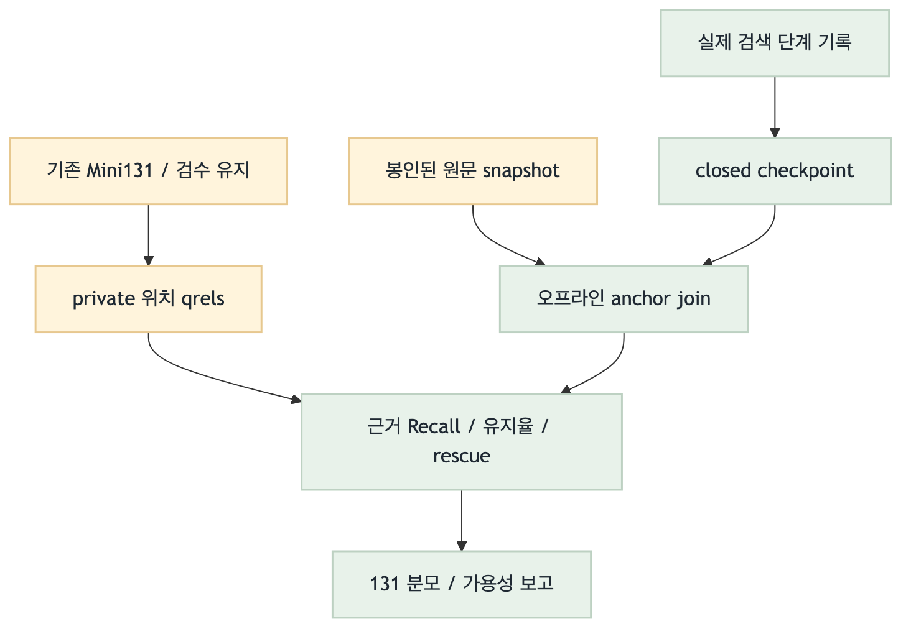
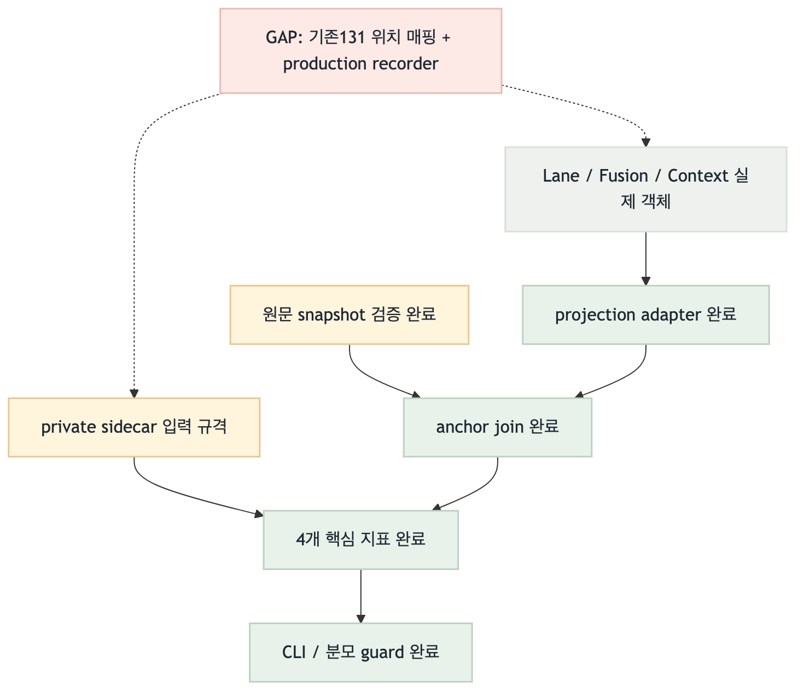

feat/total-integration · 2026-09-05 · EH4.7a 선행 구현
시험지는 그대로.
검색 중 근거가 어디서 빠지는지 측정한다.
단계별 원문 블록 평가기 구현 완료
전후 필수 근거 Recall · 관련 근거 유지율 · 양방향 lane rescue · 단계별 Recall@1/3/5/10
집중·관련 테스트 112건 PASS / 실제 98문서·20,118블록 출처 검증 PASS
전후 필수 근거 Recall · 관련 근거 유지율 · 양방향 lane rescue · 단계별 Recall@1/3/5/10
집중·관련 테스트 112건 PASS / 실제 98문서·20,118블록 출처 검증 PASS
위 수치는 구현 테스트·출처 무결성 검증 결과입니다. Mini131 전체를 새 지표로 실행한 검색 품질 점수가 아닙니다. 질문·답변, 기본 검색/생성, VLM, 임베딩은 바꾸지 않았습니다.
추가한 지표
| 측정 | 무엇을 보는가 | 구분해야 할 것 |
|---|---|---|
| 검색 직후 Recall | 필요한 원문 근거 중 pre-stage가 찾은 비율 | 기본 fusion, 재랭킹 이전 |
| 최종 context Recall | 필요한 근거 중 선택된 child에 연결된 비율 | parent 원문 전체를 답변 근거로 간주하지 않음 |
| 관련 근거 유지율 | 찾았던 정답 근거 중 context까지 남은 비율 | 단순 후보 개수 유지율이 아님 |
| lane rescue | 한 검색기가 놓친 정답 근거를 다른 검색기가 찾아 fusion에 남긴 비율 | 단순 lexical-only 후보 수가 아님 |
Target Flow / Current Implementation Flow
초록: 구현·검증주황: private 입력회색: 제어/설정빨강: 남은 연결
목표 — 실제 131문항 측정
{kind=link}

Mermaid 소스현재 — 평가기와 연결 adapter
{kind=link}

Mermaid 소스Target vs Current Gap / 다음 작업
| 우선순위 | 남은 일 | 완료 기준 | 점수 |
|---|---|---|---|
| 1 | 기존131 위치 qrel·검수 lineage 재사용 | 질문/답변 유지, 누락 위치만 표시 | 10 |
| 2 | 실제 runner 단계 기록 연결 | 같은 실행의 lane→fusion→context 저장 | 9 |
| 3 | 같은 Mini131로 검색 비교 | 입력·설정 동결 paired run | 8 |
Scoring Criteria: upstream + connection + safety + validation(각 0–3) + risk(−2–0). 작업 순서 점수이며 RAG 성능 점수가 아닙니다. MRR/nDCG·slot·문장 완전성은 후속 EH4.7c입니다.
검증과 사용 범위
보고서 QA: PNG 생성·직접 이미지 검토 완료. HTML 브라우저 확인은 로컬 file URL 접근 정책으로 차단되어 미확인입니다.
CLI 기본은 Mini131의 40/56/13/10/10/2 수량을 강제합니다. 부분 검증은 명시적으로 partial로 실행하며 전체 결과라고 표시하지 않습니다. 기록 누락·오류·qrel 미비는 null+사유, 실제 빈 검색은 0점입니다. 그림·집계·파서 전용 평가는 텍스트 평균에 섞지 않습니다.
블록 일부를 포함한 child도 block Recall을 올릴 수 있습니다. 필요한 문장이 실제로 모두 남았는지, 생성 답변이 맞는지는 별도 평가입니다. 이번 모델/API 호출은 0회입니다.